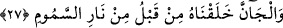
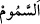

eyledi. Bir vakit geçtikten sonra kurudu ve kurumuş çamur (salsal) mertebesine ulaştı.”
27. Cinleri de daha önce zehirli ateşten yaratmıştık.
“Cinleri de.” el-Cân cinlerin babasıdır. er-Ravda’da der ki: Cinlerin babası İblistir.
el-Cân ise el-Kâmûs’ta belirtildiği üzere ‘el-cinn’ lâfzının çoğul ismidir. Cinler
gizlendikleri/göze gözükmedikleri için onlara bu isim verilmiştir. ‘el-Cân’ ile, ‘el-insan’
kelimesinden de anlaşıldığı üzere cin cinsi kasdedilmiş olması da mümkündür. Çünkü
bir cinsin tümünün, bir maddeden yaratılmış bulunan tek bir ferdden dallanıp
budaklanması sebebiyle bu cinsten olan tüm ferdler o maddeden yaratılmış olurlar.
“Daha önce,” insanın yaratılmasından önce, son derece harâretli “zehirli ateşten
yaratmıştık.”
“__WORD__es-Semûm” lügatte kavurucu rüzgâr demektir. Kavurucu rüzgârda da ateş
bulunur. es-Semûm ile el-Harûr arasında şöyle bir fark vardır: es-Semûm genellikle
gündüz olur, el-Harûr ise geceleri esen sıcak rüzgârdır. Fakat bu rüzgârın gündüzleri
estiği de olur. Nitekim el-Kâmûs’ta böyle denilmektedir. es-Semûm’a bu adın
verilmesinin latifliği sâyesinde bedendeki ağız, burun ve kulak gibi deliklere nüfûz
etmesinden ileri geldiği söylenir.
Semûm ateşinin dumansız olduğu, şimşeklerin ondan meydana geldiği, onun gökyüzü
ile hicâb (perde) arasındaki ateş olduğu da söylenir. Allah Teâlâ bir şey ihdâs etmek
istediğinde bu perde yırtılıp semûm da memur olduğu yere doğru eser. Duyduğunuz o
gürültülü ses de o perdenin yırtılma sesidir.
Cinler insanlardan önce yaratılmış olmasına rağmen âyette insanların yaratılmasının
önce zikredilmesi, insanın şânının yüceliğini ve üstünlüğünü göstermek içindir. Âdem
(a.s.)’ın yaratılması ile cinlerin yaratılması arasında 60.000 sene vardır.
Tahkik ehlinden olan ilim ehli, mülk âleminin cinler âleminden, cinler âleminin de
insanlar âleminden önce yaratıldığı konusunda ittifak etmişlerdir. Öncekilerden ibret
alması ve tüm yaratılmışlardan sonra yaratılmakla onların hepsinden üstün olduğu
ortaya çıkması için dünyâ mülkü/hükümranlığı Âdem (a.s.)’a intikâl etmiştir. Çünkü
onun sonradan yaratılması, kapının kapatılıp mühürlenmesi gibidir. O yaratılmışların
sonuncusu, kâinatın netîcesi, hissedilebilir ve akledilebilir şeylerden ibâret olan küllî
varlıkların bir nüshasıdır. Cemâl-celâl, lütuf-kahır vasıflarının kendisinde gerçekleşmiş
olması sebebiyle varlık onunla kemâlin zirvesine ulaşmıştır. Melekler ise böyle
değildir. Onlar tek bir kanat üzere yaratılmış varlıklardır. Bu kanat ise lütuftur.
Molla Câmî şöyle der:
Güzel ibâdet ve tâatten meleklere ne fayda var?